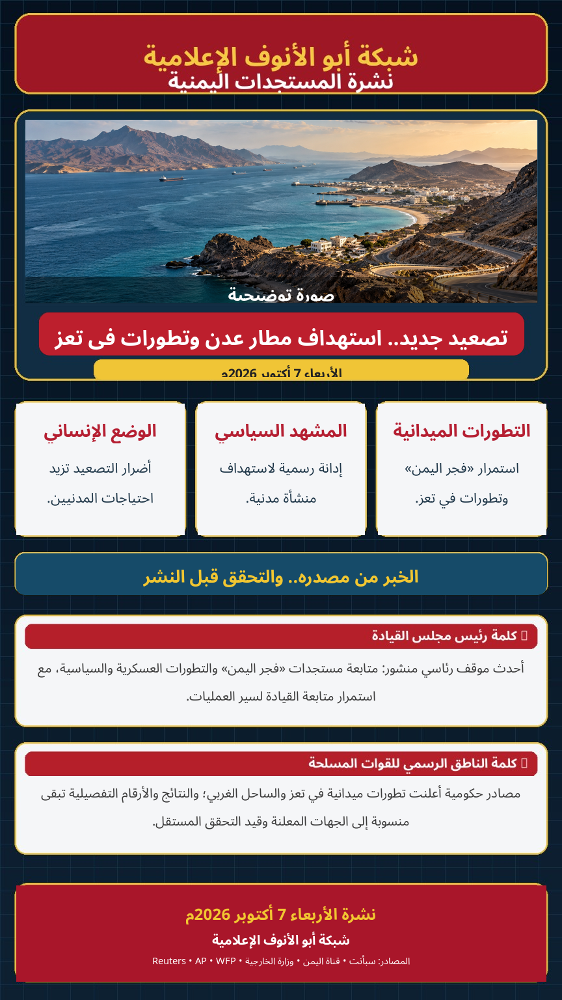

الصورة الرئيسية توضيحية وليست صورة ميدانية من أحداث اليوم.
تصعيد جديد.. استهداف مطار عدن وتطورات في تعز
استهدفت صواريخ وطائرات مسيّرة مطار عدن الدولي فجر الأربعاء، وفق وزارة النقل اليمنية، بالتزامن مع تصعيد عسكري في محاور القتال وتطورات في تعز والساحل الغربي.
أعلنت وزارة النقل اليمنية أن مطار عدن تعرض فجر اليوم لصاروخين باليستيين وعدد من الطائرات المسيّرة المفخخة، وقالت إن أحد الصاروخين سقط قرب المدرج قبل دقائق من هبوط رحلة يمنية قادمة من القاهرة. وأفادت إدارة أمن عدن بعدم تسجيل خسائر بشرية وفق المعلومات الأولية.
الجهة المعلنة: وزارة النقل/الجهات الرسمية اليمنية.
أفادت وكالة سبأ بإصابة خمسة مدنيين جراء قصف استهدف منطقتي الشماسي والثورة وسط مدينة تعز. كما تتواصل التطورات المرتبطة بعملية «فجر اليمن» في محاور القتال.
أحدث موقف رئاسي منشور: متابعة رئيس مجلس القيادة لسير عملية «فجر اليمن» والتطورات العسكرية والسياسية، مع استمرار متابعة القيادة لمجريات العمليات.
تواصل القوات الحكومية، وفق البيانات الرسمية السابقة، عملية «فجر اليمن». وتبقى الأرقام والنتائج الميدانية التفصيلية في نشرة اليوم منسوبة إلى الجهات التي أعلنتها ولا تُعرض كتحقق مستقل.
أعلن تحالف دعم الشرعية اعتراض وتدمير صاروخ باليستي شمال الرياض. كما أفادت Reuters وAP بسقوط قتلى وجرحى في هجمات استهدفت مطارات سعودية، مع استمرار التصعيد الإقليمي.
🟢 منشور رسمي: استهداف مطار عدن، بيان وزارة الخارجية، وإصابة مدنيين في تعز.
🟡 منسوب/قيد التحقق: تفاصيل ونتائج العمليات العسكرية والأرقام الميدانية.
🔵 الصورة الرئيسية: توضيحية وليست صورة من موقع الحدث.